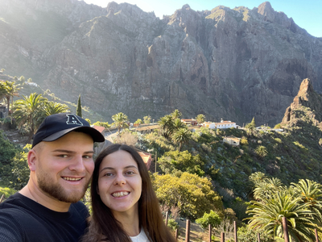
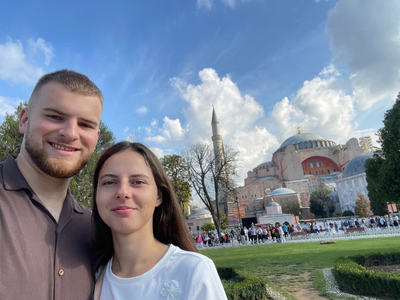
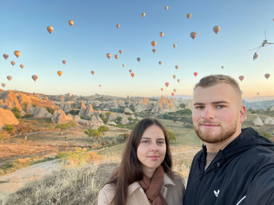
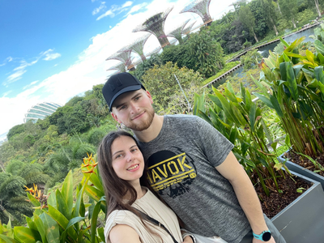
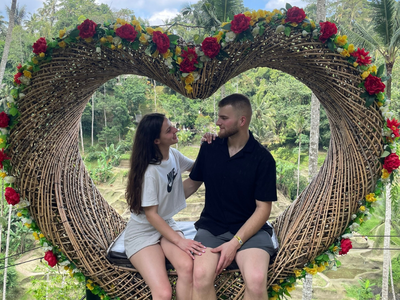
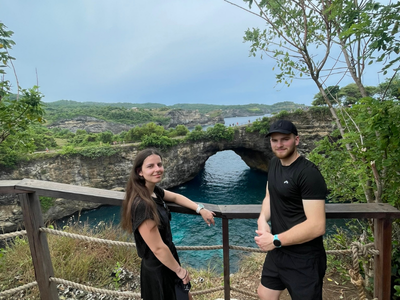

Najnovšie blogy

Tenerife
Od čiernych sopečných pláží až na vrchol Teide – dobrodružná cesta naprieč Tenerife

Istanbul
Istanbul bez filtrov: Stratiť sa v bazároch, objaviť skryté dvory a zažiť mesto dvoch kontinentov

Cappadocia
Od jaskynných domov po let balónom: Cappadocia ako zážitok na celý život

Singapur
Mesto budúcnosti: Singapur ako pulzujúca oáza medzi oceánom a tropickou zeleňou

Bali
Medzi oceánom a vulkánmi: Bali ako cesta za slobodou a vnútorným pokojom

Nusa Penida
Divoká a nespútaná: Nusa Penida ako cesta za hranice komfortu